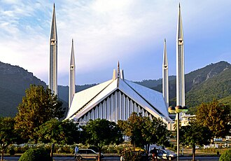

Presentation
La mosquée Faisal ou mosquée Shah Faisal est une mosquée moderne située à Islamabad, capitale du Pakistan, construite entre 1976 et 1986. Elle est nommée d'après le roi d'Arabie saoudite Fayçal ben Abdelaziz Al Saoud qui l'a financée. Avec une capacité d'environ 34 000 personnes en intérieur et 74 000 avec les extérieurs, elle est la plus importante du pays et figure parmi les plus grandes du monde.
مسجد الملك فيصل أو مسجد شاه فيصل هو مسجد يقع في العاصمة الباكستانية إسلام أباد في باكستان وهو من أكبر المساجد في العالم وأشهرها ومعروف بضخامته وبهندسته العمرانية الفريدة. المسجد من تصميم المهندس التركي ودعت دالوكاي، وقد تم افتتاحه سنة 1987.
The Faisal Mosque is the national mosque of Pakistan, located in Islamabad, the capital of the country. It is the sixth-largest mosque in the world and located on the foothills of Margalla Hills. It is named after the late King Faisal of Saudi Arabia. Designed by Turkish architect Vedat Dalokay, the mosque features a contemporary design consisting of eight sides of concrete shell and is inspired by the design of a typical Bedouin tent.
Faysal Camii, İslamabad, Pakistan'da yer almakta olup dünyanın en büyük ve en gözde camilerinden biridir. 5.000 m2 üzerine yapılmış, 74.000 kişi kapasiteli bir camidir.
Masjid Faisal adalah masjid terbesar di Pakistan. Berada di kaki bukit Margalla di Islamabad, desainnya terinspirasi dari tenda Suku Badui dipadu-padankan dengan garis-garis kontemporer. Masjid ini menjadi daya tarik wisata utama di Pakistan dan dianggap sebagai karya kontemporer dan berpengaruh dari arsitektur Islam.
فیصل مسجد پاکستان کے دار الحکومت اسلام آباد میں قائم ایک عظیم الشان مسجدہے جسے جنوبی ایشیا کی سب سے بڑی مسجد ہونے کا اعزاز حاصل ہے۔ یہ عظیم مسجد اپنے انوکھے طرز تعمیر کے باعث تمام مسلم دنیا میں معروف ہے۔ مسجد کا سنگ بنیاد شوال 1396ھ/ اکتوبر 1976ء کو رکھا گیا اور تکمیل 1987ء میں ہوئی۔مذہبی اور تاریخی اعتبار سے یہ خراسانی اور سندھی تہذیبوں کا سنگم ہے۔
Die Schah-Faisal-Moschee ist die Nationalmoschee von Pakistan. Sie befindet sich im Nordwesten der pakistanischen Hauptstadt Islamabad vor den Margalla-Hügeln. Sie wurde nach König Faisal von Saudi-Arabien benannt.
Shah Faisal Masjid es una de las mezquitas más grandes de Asia. Se encuentra en la ciudad de Islamabad, capital de Pakistán. Es una mezquita muy conocida en el mundo islámico y es renombrada por su inmenso tamaño y su arquitectura. La Mezquita Faisal es además la Mezquita Nacional de Pakistán.
La moschea Fayṣal a Islamabad è la più grande moschea in Pakistan e nell'Asia meridionale e una delle più grandi moschee del mondo.
A Mesquita Faisal é a maior mesquita no Paquistão, localizado em Islamabad, a capital do país. A construção começou em 1976 e foi completada em 1986, pelo arquiteto turco Vedat Dalokay e se tornou um ícone da cidade. Seu nome é em honra do rei saudita Faisal bin Abdulaziz Al Saud.
費薩爾清真寺，位于巴基斯坦首都伊斯兰堡，是巴基斯坦的国家清真寺。它是巴基斯坦乃至南亚地区最大的清真寺，同时也是世界第六大清真寺。清真寺由沙特阿拉伯国王费萨尔·本·阿卜杜勒-阿齐兹·阿勒沙特出资修建，并以其名冠名。建筑风格以贝都因人帐篷为灵感。
ファイサル・モスク は、パキスタンの首都イスラマバードにあるモスク（イスラム教寺院）である。サウジアラビアの援助によって建設された世界有数の大規模なモスクである。国際イスラム大学 の付属施設。
파이살 모스크(Faisal Mosque) 또는 샤 파이살 모스크(Shah Faisal Mosque)는 파키스탄 이슬라마바드의 사원이다.
फ़ैसल मस्जिद इस्लामाबाद, पाकिस्तान में एक मस्जिद है। ये दुनिया की सबसे बड़े मस्जिदों में से एक है।
Мечеть Фе́йсала — национальная мечеть Пакистан, расположенная в Исламабаде. Это шестая по величине мечеть в мире и самая большая в Южной Азии. Площадь мечети составляет 5 000 квадратных метров, а вместимость, по разным данным, от 100 000 до 300 000 верующих. Архитектура мечети вдохновлена внешним видом бедуинской палатки и Каабой в Мекке.
Nhà thờ Hồi giáo Shah Faisal là một nhà thờ Hồi giáo tại Islamabad, Pakistan. Đây là nhà thờ Hồi giáo lớn nhất Nam Á và là một trong những nhà thờ Hồi giáo lớn nhất thế giới, công trình tương tự xếp thứ nhì là Nhà thờ Hồi giáo Hassan II ở Casablanca, Maroc. Nhà thờ Hồi giáo Faisal là nhà thờ Hồi giáo quốc gia của Pakistan. Công trình này được đặt tên theo vua quá cố Faisal bin Abdul-Aziz của Ả Rập Xê Út, người đã cấp tài chính cho dự án.
มัสยิดฟัยศ็อล, มัสยิดไฟซอล หรือ มัสยิดฟัยซัล เป็นมัสยิดในอิสลามาบัด ประเทศปากีสถาน ตั้งอยู่บริเวณเชิงเขา Margalla Hills มัสยิดนี้ประกอบด้วยการออกแบบร่วมสมัย มีชั้นนอกของอาคาร 8 ด้านซึ่งได้รับแรงบันดาลใจมาจากกระโจมเบดูอิน มัสยิดฟัยศ็อลเป็นสถานที่ท่องเที่ยวสำคัญของทั้งประเทศปากีสถานและของเมืองอิสลามาบัด และได้รับการเรียกขานว่าเป็นมัสยิดที่มีสถาปัตยกรรมร่วมสมัยที่มีอิทธิพลต่อสถาปัตยกรรมอิสลาม
Faisalmoskén i Islamabad, Pakistan, är en av de största moskéerna i världen. Det är en populär moské i den islamiska världen, välkänd både för sin storlek och sin arkitektur. I dess centrala del finns en tresidig gudstjänstlokal som kan rymma 10 000 deltagare och i omkringliggande lokaler och på gården kan ytterligare 200 000 rymmas.
Moscheea Faisal este o moschee din orașul Islamabad, Pakistan. Aceasta este moscheea națională a Pakistanului și cea mai mare moschee din Asia de Sud. Numele ei vine de la Faisal bin Abdulaziz Al Saud, regele Arabiei Saudite, care a sponsorizat construcția edificiului.
På kartan
Dokument och länkar
- Wikipédia — Français
- Wikipédia — العربية
- Wikipédia — English
- Wikipédia — Türkçe
- Wikipédia — Bahasa Indonesia
- Wikipédia — اردو
- Wikipédia — Deutsch
- Wikipédia — Español
- Wikipédia — Italiano
- Wikipédia — Português
- Wikipédia — 中文
- Wikipédia — 日本語
- Wikipédia — 한국어
- Wikipédia — हिन्दी
- Wikipédia — Русский
- Wikipédia — Tiếng Việt
- Wikipédia — ไทย
- Wikipédia — Svenska
- Wikipédia — Română
- Wikidata — Q500983
Data: Wikidata (CC0), uppdateras var tredje månad. Året är byggnadens tidigaste kända byggdatum: för en byggnad som blev moské senare (som Hagia Sofia) är det den ursprungliga byggnadens. Foton: Wikimedia Commons, upphovsperson och licens på varje fotos sida.